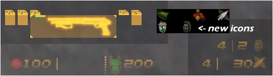
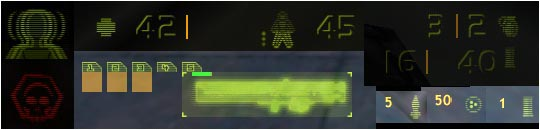

|
||||||||||||||||||||||||||||||||||||


| [ Crosshairs | HUDs | Misc ] |
| Colorful Hud 1 With New Icons - Download |
| I was messing around with more colors than just red, green, and yellow in huds, because I asked Billdoor about how they would work in sparkies, and he said try them out. I did, and they worked. I released this hud just thinking it would work with sparkies, but since the hud is mostly red, green, and white (yellow with default tfc), it actually looks decent without sparky. A lot of people like this, so I stuck it on my page. This hud looks the best with sparkies and a hud color of white, but it will work fine with default TFC. |
| Colorful Hud 2 With New Icons - Download |
|  |
| This is the same hud as above, just with different text. |
| Colorful Hud 3 With New Icons - Download |
| Same as above. |
| New Icon Hud - Download |
| I really got tired of the icons in HUDs for TFC not showing the correct ammo types for the TFC weapons. I decided to fix that. This hud doesn't have colored icons though, they are plain. The picture is wrong on that, I was just lazy and didn't take another screenshot showing what the other icons looked like ingame. |
| Hud - Yellow - Green - Red |
|  |
| Here is my first hud. I wanted to make a 3D looking hud, and it came out this way. I think it looks pretty neato. All I did was outer-bevel it, but I think it turned out well. I have it in 3 different colors: the default yellow, green, and red. Everything that you see on your screen is changed, from the death messages, to weapon selection, to ammo pickup. Hope you like it. |
| Alien HUD - Download |
| Alien requested a hud with an alien head on it. Some other people liked it also, so I'm leaving it up. |
| Bored Hud 1 - Download |
| Bored Hud 2 - Download |
| Bored Hud 3 - Download |
| Bored Hud 4 - Download |
| Bored Hud 5 - Download |
| Bored Hud 6 - Download |
| These are six huds I made one night when I was bored. I was getting tired of my green hud, so I made a yellow one, but I wanted one I would like. I went over the top and made 6, just so I could make sure I would like one. They are a mixture of elements from my beveled green hud, but yellow, and with different fonts. |
| HUD 1 - Download |
| After choosing a hud out of the six I made yesterday, I edited it to look a little like my pain sprites. I really like how this turned out, and it goes really well with the pain sprites. I hope you like this one, cause I sure do. |
| Sumo HUD - Download |
| An edited hud from right above this one. I changed the armor to a sumo just to personalize my hud a bit. |